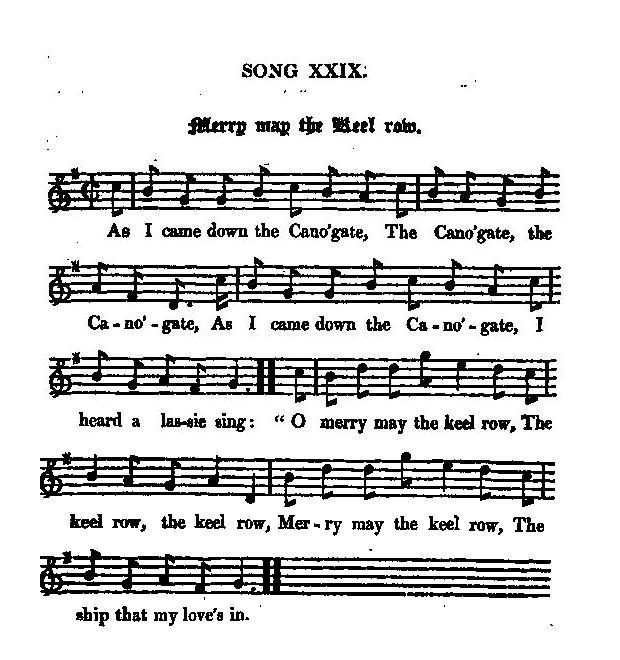

Merry may the Keel row
Que vogue la barque
Auteur ou complément
Tune - Mélodie"Merry may the Keel row"
from Hogg's "Jacobite Relics" N°29 Second Series
Sequenced by Christian Souchon

|
To the tune:
"Stokoe and Bruce (1882) devote a note to the tune claiming Northumbrian authorship for "The Keel Row," an extremely popular tune in its time (in both Scotland and Northumberland) and "the best known and most popular of all Northumbrian lyrics." He refutes assertions that the tune is Scotch (to whom it is often credited), citing the following: 1) the 'keel' is a vessel which is only known on the rivers Tyne and Wear; 2) In the collection of the Society of Antiquaries of Newcastle is a MS Book of Tunes, dated 1774, in which the tune appeared; 3) Joseph Ritson, once a celebrated antiquary, included it in his collection of old songs, 'The Northumberland Garland,' published 1793 (a garland is a of eight to sixteen tunes). Stokoe and Bruce point out that these dates are anterior to the appearance of the song in any Scottish collection, having found that Cromek inserted it in his Remains of Nithsdale and Galloway Song, 1810, where it is labelled a "popular bridal tune in Scotland" and set to a Jacobite song called "As I came down the Cannongate." "Kidson (1890) does find the melody under the "Keel Row" title in an early Scottish edition which predates the Northumbrian printings, in Neil Stewart's c. 1770 A Collection of favourite Scots' Tunes, with Variations for the Violoncello or Harpsichord, by the late Charles McLean, and other eminent masters (Edinburgh)." “The Keel Row” has been arranged by classical composers Claude Debussy and Eric Satie." Source "The Fiddler's Companion" (cf. Liens). |
A propos de la mélodie
:
"Stokoe et Bruce , en 1882, consacrent une note au chant "The Keel Row" (Vogue la chaloupe) dont ils voient l'origine dans le Northumberland. Pour montrer qu'il n'est pas écossais, ils s'appuient sur 3 points: 1° le mot "keel" désigne une sorte de barque qu'on ne trouve que sur la Tyne et la Wear; 2° Dans les collections de la Société des Antiquaires de Nexcastle on trouve un recueil de chants manuscrit, datant de 1774, qui renferme ce chant; 3° Joseph Ritson, antiquaire autrefois célèbre, le fait figurer dans ses recueils de chants anciens, la "Guirlande de Northumberland", publiée en 1793 (une guirlande est une suite de 8 à 16 mélodies). Stokoe et Bruce soulignent que ces dates sont antérieures à celle à laquelle on le trouve pour la première fois dans une collection écossaise, à savoir, dans les "Vestiges de Nithsdale et de Galloway" de Cromek, parus en 1810 en tant que "chant nuptial écossais" et accompagnant [le présent chant] Jacobite qauquel il donne le titre de "En descendant le Cannongate". Kidson (1890) trouve la mélodie, sous le titre de "Keel Row" dans une publication écossaise, antérieure aux éditions imprimées de Northumberland. Il s'agit d'une publication de Neil Stewart, d'environ 1770. "Recueil de mélodies écossaises en vogue, avec variations pour violoncelle ou clavecin", composées par feu Charles McLean et autres maîtres éminents (Edimbourg). "The Keel Row" a inspiré des auteurs classiques tels que Claude Debussy et Eric Satie." Source "The Fiddler's Companion" (cf. liens). |

|
MERRY MAY THE KEEL ROW
1. As I came down the Cano'gate,[1] The Cano'gate, the Cano'gate, As I came down the Cano'gate, I heard a lassie sing: O merry may the keel row, The keel row, the keel row, Merry may the keel row, The ship that my love's in. 2. My love has breath o' roses, O' roses, o' roses, Wi' arms o' lily posies, To fauld a lassie in. O merry, &c. 3. My love he wears a bonnet, A bonnet, a bonnet, A snawy rose upon it, [2] A dimple on his chin. O merry may the keel row, The keel row, the keel row, Merry may the keel row, The ship that my love's in. Source: "The Jacobite Relics of Scotland, being the Songs, Airs and Legends of the Adherents to the House of Stuart" collected by James Hogg, published in Edinburgh by William Blackwood in 1819. |
QUE VOGUE LA BARQUE
1. En descendant Le Canongate, le Canongate, [1] J'ai entendu Une fille qui chantait: "Que vogue la barque, La barque, la barque, Que vogue la barque, Mon amour à son bord! 2. Quand il respire L'air embaume la rose, Le lis par brassées Pour m'étourdir plus fort. "Que vogue la barque... 3. A son bonnet Il arbore une rose blanche . [2] De plus il a une fossette au menton. "Que vogue la barque, La barque, la barque, Que vogue la barque, Mon amour à son bord! (Trad. Christian Souchon(c)2010) |
|
[1]
Canongate
is part of the main street of Edinburgh, known as the Royal Mile. The Northumbrian (non-Jacobite) version has:
As I cam thro' Sandgate, thro' Sandgate, thro' Sandgate; [2] This is probably the original of the pretty household song "Weel may the Boatie row", which is sung to a well-known bridal tune, and is a universal favourite with the common people. Like many other fragments of Scottish Song, it has the Jacobite rose growing among its love sentiments. Source: Hogg in "Jacobite Relics", 2nd Series, 1821 |
[1]
Canongate
désigne une section de l'artère principale d'Edimbourg qu'on appelle "la Lieue royale". La version (non-Jacobite) de Northumberland commence par:
En traversant Sandgate, Sangate, Sandgate... [2] "Ceci est probablement l'origine du joli chant d'enfant "Weel may the Boatie row", que l'on chante l'air d'une marche nuptiale connue et universellement appréciée du petit peuple. Comme dans beaucoup d'autres chants écossais, la rose blanche Jacobite se mêle aux autres images sentimentales." Source: Hogg dans "Jacobite Relics", 2ème Série, 1821 |
|
|
|